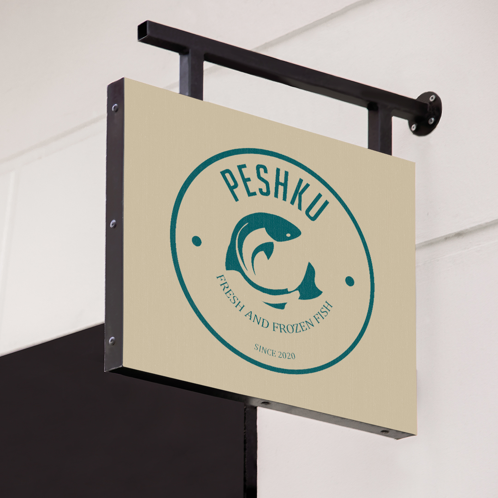
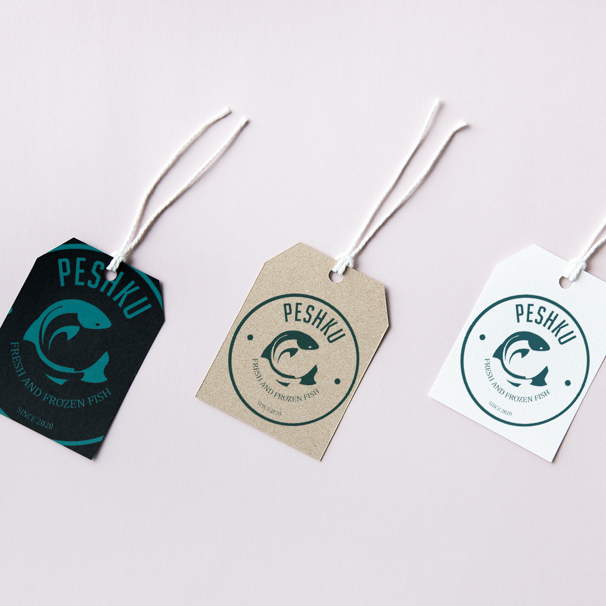

Identidad de marca para Peshku



Peshku es una PYME marplatense que distribuye sus productos frescos y congelados por toda la provincia. Tuve la misión de darle identidad a una marca que comenzó con un puñado de clientes, transmitiendo frescura, compromiso sin perder esos colores tan distintivos del mar y nuestras costas. Del mar a tu mesa!
Logo para Luis Heras Herreria


Luis Heras, mi padre, es Herrero desde los 12 años. Ya con sus 60 años cumplidos y luego de mucho insistir, pude convencerlo de llevar esa “empresa” familiar al siguiente escalón, otorgándole una identidad que lo destaque del resto. Así luego de varios intentos, se logro un diseño que cumplía sus expectativas, y lo mejor de todo, le ponía cara a tantos años de trabajo.
Diseño UX/UI - App FOLLOW


FOLLOW es una aplicación que te permite compartir los datos y ubicación de tu viaje en taxis y remises.
Solución para el pasajero: - Conocer tantos los datos de la matricula como del chofer. Compartirlos con un tercero. - Seguimiento del viajes por parte de un tercero (familiar, amigo o conocida). - Botón antipático para emergencias. - Verificación de ingreso al domicilio. - Clasificación del viaje por número de licencia.